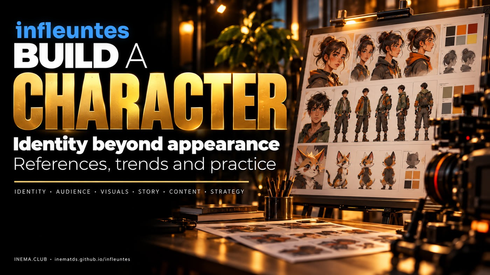
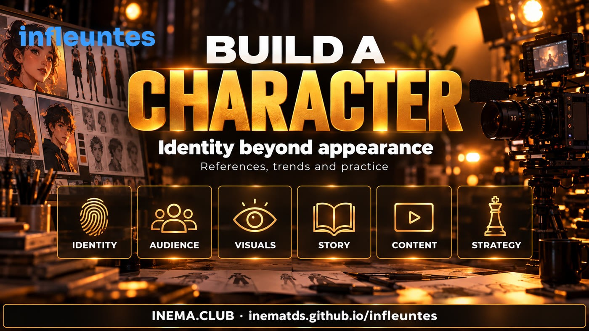

What was a fad, what lost momentum, and what remains relevant among virtual influencers.

infleuntes is a research guide to virtual influencers and AI-generated characters. It is for content creators who want to develop an identity that audiences recognize and have a reason to follow. It brings together twelve references, compares signs of continuity and declining momentum, and offers a practical character worksheet. It is free: just read, open the sources, and try the exercise.

Replace “what should my character look like?” with “why would anyone follow this character?”. A recognizable appearance helps, but people return for humor, usefulness, stories, music, a sense of connection, or a combination of these.
A virtual influencer is a character with a public digital presence. It may be created using 3D animation, computer graphics, image compositing, or generative AI. An AI-generated character is not necessarily autonomous: people choose its topics, images, dialogue, and partnerships. Miquela and Shudu are historical examples of computer graphics; they should not be presented as recent creations of image generators. Library of Congress · The Diigitals.
This is an editorial interpretation of the evidence, not a popularity ranking. “Outdated” refers to an insufficient strategy, not the disappearance of a technology or the absence of value in a character.
| Assessment | What belongs here | What to do with it |
|---|---|---|
| Outdated as a complete proposition | “It looks like a real person, so it will grow”; repeating attractive photos; presenting followers as revenue | Treat realism as a production resource. Define a reason to follow and measure real responses |
| Novelty wave | The surprise of discovering that the model does not exist; headlines about easy money; imitations of a viral meme | Study the hook, but do not assume that the novelty persists or that copying guarantees results |
| Documented commercial continuity | Lu do Magalu; imma’s campaign work and the announcement of a conversational interface in 2026 | Observe the integration of character, brand, and service. A campaign is not proof of follower growth |
| Creative continuity, with mixed signals | Milla Sofia combines music and platforms; Aitana remains in her agency’s portfolio; Shudu maintains an editorial positioning | Distinguish an ongoing operation from accelerating growth. Do not call mere presence an “explosion” |
| Valuable legacy, traction to reassess | Miquela, Naina, Rozy, and Emily in the supplied Instagram snapshot | Learn from their identities and check activity before using them as examples of current growth |
Lu do Magalu has the strongest recent commercial evidence in this selection. There is a Koleston campaign in 2026 and an advertising launch for WhatsApp da Lu, connecting the character with assisted shopping. This supports “remains commercially relevant”; it is not an independent audit of profit or the entire audience. Exame — campaign and reported results · LBB, 16/06/2026.
imma shows expanding applications. On 22/07/2026, Aww announced her presence as a conversational character in the HITO service at August’s AI EXPO. This is evidence of product development and corporate publicity; on its own, it does not demonstrate virality or Instagram growth. Official Aww announcement.
Milla Sofia shows continuity and a better quarter than month, according to the supplied research: a net gain of about +22 thousand on Instagram over 90 days, but a loss over the 30-day period. Her own website confirms music and modeling as areas of the project. There is no proof here that music caused the growth. CreatorDB · Milla Sofia’s website.
Marisa Maiô is an example of a wave with a proven commercial application in 2025. Magalu documented a campaign featuring the character in June of that year. The source proves the historical partnership; this research did not find comparable evidence to claim that she remains at the same peak in October 2026. Nor does this prove that the project has ended. Magalu statement, 12/06/2025.
Practical takeaway: the opportunity has not disappeared, but “it is made with AI” is not a sufficient argument. Usefulness, humor, storytelling, culture, and distribution deserve more attention than the promise of a virtual model that makes money on its own. Saturation and fading novelty are explanatory hypotheses, not causes demonstrated by the numbers below.
Snapshot supplied by the author, with data collected between 29/09 and 12/10/2026, based on CreatorDB, HypeAuditor, and Likeometer. Figures are approximate and subject to the aggregators’ methodologies. This is not a direct account check or a real-time dashboard. Each source’s update dates may differ.
| Character | Approximate Instagram followers | 30 days, as reported by source | Recorded frequency / activity | Cautious interpretation |
|---|---|---|---|---|
| Lil Miquela | 2.249 million | -0.42% | ~0.2 posts/week; early October | Strong legacy; low posting frequency and recent contraction |
| Emily Pellegrini | 548 thousand | -0.7% | Approximate last record: April/2026 | Past attention; current activity not directly confirmed |
| Shudu | 236 thousand | -0.1% | Sporadic; approximately September/2026 | Small contraction, without evidence of collapse |
| Naina | 346 thousand | -5.6% | ~4.2 posts/week; early October | Frequent posting did not prevent follower losses |
| Milla Sofia | 679 thousand | -0.5% | ~0.9 posts/week on Instagram | Negative month, positive quarter in the research |
| imma | 377.8 thousand | Not confirmed | Recent frequency not confirmed | Commercial projects and audiences need separate analyses |
| Rozy | 160 thousand | -0.5% | Approximate last record: April/2026 | Sign of low indexed activity; cause not demonstrated |
Do not confuse these: losing followers does not measure declining reach, revenue, or views. “Latest post” may exclude stories, deleted material, and other platforms. Percentages were preserved as supplied by the aggregators, not recalculated as a homogeneous series.
Checking Naina’s page reproduced the figures for 08/10: 345,982 followers, -19,271 over 30 days, and ~4.2 posts/week. However, the page repeats the 90-day change in the 365-day row and mixes platform descriptions; therefore we do not use its annual row or automated biography as independent evidence. CreatorDB — Naina.
For Miquela, there is also journalistic analysis from 2025 about follower losses. We do not extrapolate a historical average to every month of 2026. The claim that Rozy’s operation had shut down was not independently confirmed and was excluded from the conclusions. Digiday, 11/09/2025.
Snapshot sources: Miquela / HypeAuditor, Miquela / CreatorDB, Emily, Shudu, Naina, Milla, imma, Rozy.
The lessons below are editorial interpretations. An available portfolio confirms representation or a public presence, but is not enough to assess current growth. We do not reproduce photographs of the characters: consult the linked sources and profiles.
Original reference · legacy, with contraction in the snapshot. A digital character associated with fashion, music, and social storytelling. The Library of Congress records her origins in computer graphics. The lesson is to build personality and continuity beyond the face. Avoid treating every fictional story as a person’s lived experience.
Instagram · Library of Congress record.
Original reference · a case of historical publicity. Coverage in January 2024 introduced the AI-generated model. The case helps explore aspirational aesthetics and curiosity without turning revenue claims into a replicable promise. Her current status requires a new direct check; the snapshot does not prove recent activity.
Profile listed in the original · Radio Deejay, 04/01/2024.
Original reference · persistent editorial positioning. The Diigitals presents Shudu as its original digital model. The lessons concern lighting, composition, material qualities, and fashion coherence. Portfolio quality does not prove audience growth; the small decline in the snapshot does not erase the case’s value.
Instagram · Official portfolio.
Original reference · active, but losing followers in the observed period. The project associated with Avtr Meta Labs explores character, fashion, and entertainment in the Indian context. It helps examine culture and recurring stories. The case also challenges the simplistic formula that more posts always bring more followers.
Instagram · Avtr Meta Labs · Aggregator metrics.
Original reference · continuity with mixed signals. The project’s website features music and modeling, with links to audio platforms. The lesson is to create something to follow beyond a sequence of portraits. Diversification is documented; its causal effect on growth and revenue is not measured here.
Instagram · Website and music.
Original reference · expanding applications in 2026. Short pink hair and an urban world form her recognizable identity. The HITO announcement adds a conversational dimension. The lesson is to preserve core elements while expanding the character’s uses; an announcement does not confirm the scale of adoption.
Instagram · Aww / HITO, July 2026.
Original reference · low indexed activity in the snapshot. Presented in a communications portfolio as a virtual influencer and singer. The case helps explore expression and campaigns. Maintaining a character depends on human operations; we do not attribute her low activity to a business cause without confirmation.
Research addition · documented commercial continuity in 2026. She is the voice of a Brazilian brand, connected to content, campaigns, and commerce. The lesson is to give the character a clear function. An identity can evolve visually without disappearing, as the hair-change campaign illustrates.
Magalu’s Instagram · 2026 campaign.
Research addition · available portfolio, unaudited growth. The Clueless presents the character in association with fitness, fashion, and gaming. The lesson is to combine a visual signature with defined interests. The agency’s entire client list should not be attributed to the character; revenue reported in the press is not the same as audited profit.
Instagram · Official character page.
Research addition · a historical expansion milestone. In September 2023, Warner Music published news of signing the digital character and releasing a single. The lesson is that a deliberately stylized appearance can support an artistic identity. The 2023 news does not prove traction in 2026.
Instagram · Warner Music, 02/09/2023.
Research addition · an animation reference, not proof of generative AI. Brazilian creator Kael Cabral’s character appears in the Pictoplasma 2025 program, featuring humor, visual storytelling, and collaborations. The lesson is that silhouette, rhythm, and relatability can matter more than a realistic face. We do not use old figures as current audience counts.
Research addition · a 2025 wave with a proven partnership. The fictional host draws on the conventions of variety shows and Brazilian humor. The lesson is to combine character, format, and cultural context. Copying the character’s appearance does not reproduce the timing or script that sustained the attention.
Context and creator — Veja SP · Official Magalu campaign, June/2025.
Consistency has four layers: visual, verbal, narrative, and strategic. Repeating the face addresses only part of the first.
These are planning and review recommendations, not a comparative test of tools. The guide does not attribute production software to characters unless their creators have confirmed it.
Copy the worksheet and answer in short sentences. Do this before choosing an image generator.
Name and description in one sentence:
Who the character speaks to:
Why someone would return tomorrow:
Three fixed visual traits:
Three personality traits:
Tone of voice and recurring expressions:
Cultural world and usual situations:
What the character never does:
Recurring segment 1:
Recurring segment 2:
Story in three episodes:
How I disclose that the character is virtual:
What I will measure in the first test:
A possible coherent partnership or product:
Fictional example: Bia, a virtual host who helps adults understand technology through everyday situations. Her signature is patient humor, a recognizable wardrobe, and short demonstrations. A recurring segment follows the same task in three stages: question, attempt, and result. The test measures whether people understand the explanation and ask for the next episode. This is not a real success story or a revenue promise.
For discussion in INEMA.VIDEOS: after studying the cases, which part of your character needs to change: appearance, story, audience, or the reason to follow? The original material mentions “VIP → Progress”; that activity was preserved in the original file, but is not a requirement for using this open guide.
Synthesis: character + identity + storytelling + audience + operations. Use references to understand decisions, not to copy faces, stories, or promises of success.